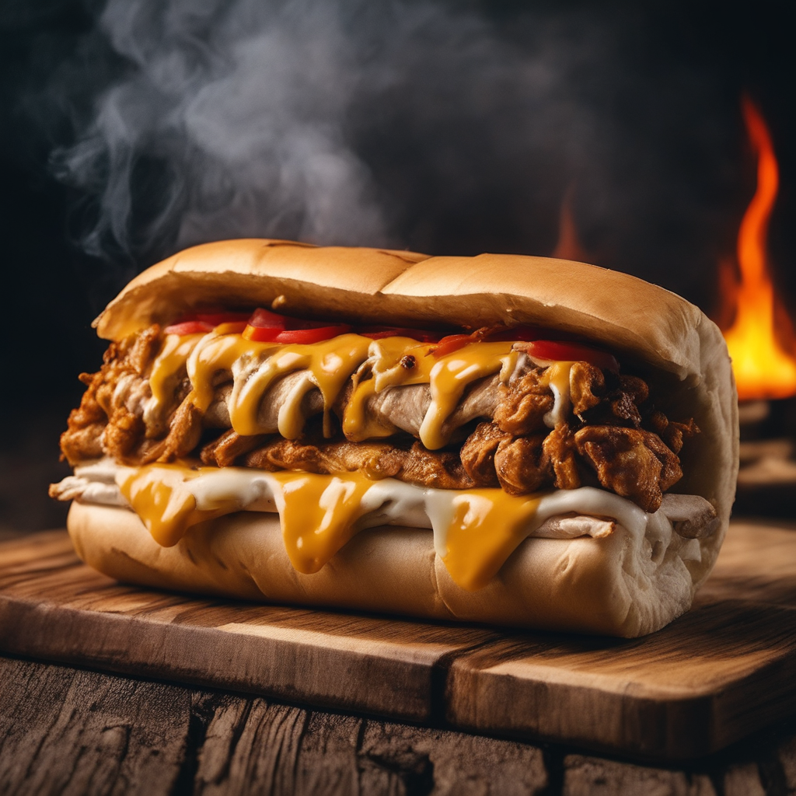

Stuffed Grilled Hot dog

Description
Indulge in the timeless delight of our Classic Grilled Hot Dog. Served in a soft, perfectly toasted bun, our juicy hot dog offers a burst of smoky and savory flavors with every bite. Whether you opt for a traditional ketchup-mustard combo or choose to pile on your own favorite toppings, this simple yet satisfying treat is a staple at any barbecue, game day, or summer gathering. Sink your teeth into nostalgia and relish the pure joy of a Classic Grilled Hot Dog – a symbol of comfort food at its finest.
Ingredients
- Hot dog sausages
- Hot dog buns
- ketchup
- Chopped onions
- Relish
- Sauerkraut
- Cheese
- Bacon bits
- Jalapeño slices
- Pickles
- Chili
- Salt and pepper
Steps
- Preheat the grill or stovetop pan.
- Cook the hot dog sausages on the grill or in the pan until heated through and slightly charred.
- Warm the hot dog buns on the grill or in the oven.
- Place a cooked hot dog sausage inside each bun.
- Add condiments like ketchup, mustard, and mayonnaise.
- Sprinkle chopped onions and relish on top.
- Add sauerkraut and shredded cheese.
- For extra flavor, you can include bacon bits or jalapeño slices.
- Place pickles on top for a tangy kick.
- If desired, drizzle with chili.
- Season with salt and pepper to taste.
Home